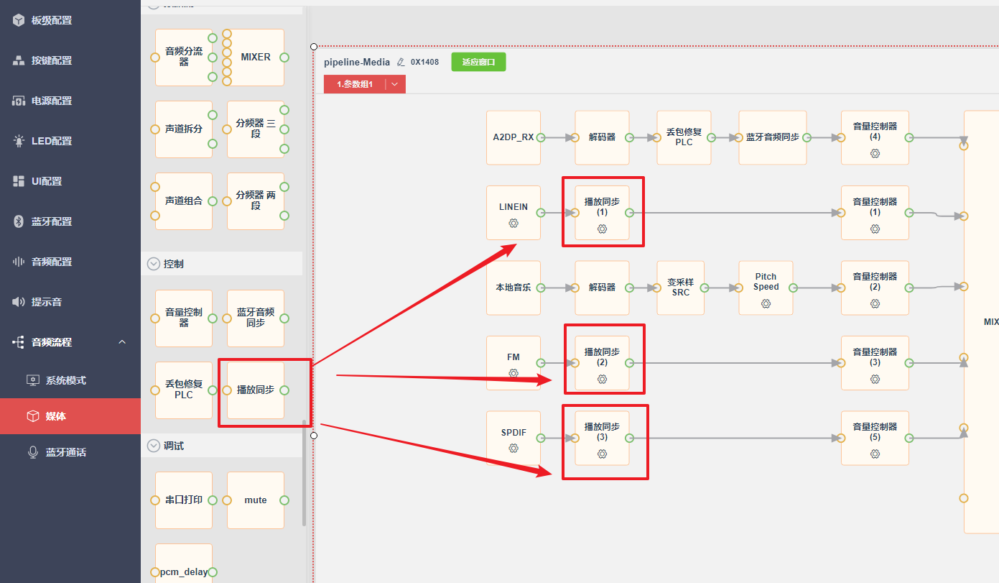
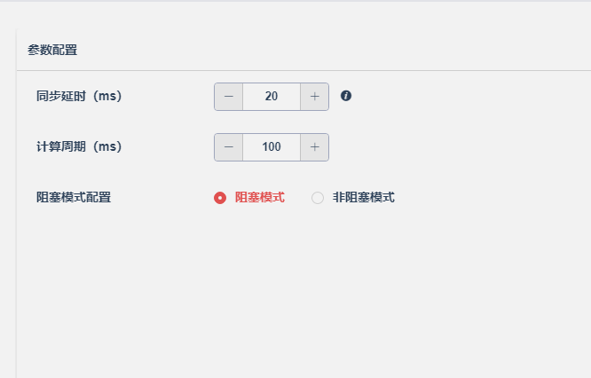

13.2.2. 播放同步
13.2.2.1. 模块功能
当两个时钟不同源的设备通过数字信号通信时，就会遇到时钟不同步的现象。例如SPDIF、IIS、USB Audio
等数字协议通信时，协议时钟来源于主机，当我们小机作为从机时，就会出现时钟不同的现象。表现为一段时间
内主机给小机的音频数据量多了或者少了，在没有做同步的情况下，就会出现播放声音卡顿的现象。
例如主机的晶振时钟比从机的晶振时钟快10%，通信协商的音频数据采样率是48kHz，那么在主机时钟的1秒内发了48000个采样点数据给从机，
从机时钟的一秒内实际上收到了48000 * 110% = 48480个采样点数据。从机把数据按照采样率48kHz去播放，那么每秒就会多出 480个采样点数据堆积
到缓存中。慢慢的就会导致播放延迟变大，缓存满了就会出现声音卡顿。
如果加入了同步机制，同步模块就会发现主机和从机的速度不相同，计算得出主机和从机的具体速度差异后，就会将变采样模块输入输出采样率
配置为 48480 -> 48000，这样就完成了主从机的时钟同步。
除了做不同设备之间的时钟速度同步，同步模块还有控制播放通路缓存的功能，用于控制播放延时。
13.2.2.2. 使用说明
从可视化配置工具中将播放同步节点拖动到需要同步的数据流中，目前播放同步节点仅支持接在PCM源节点后面，例如LINEIN、ADC、FM等输出数据为PCM类型的节点。

13.2.2.3. 参数说明

同步延时
控制从播放同步节点到最终输出节点间的音频数据缓存时间，这个缓存时间的设定取决于数据源的稳定性和数据流处理的及时性计算周期
控制播放同步节点计算的周期。计算周期时间长，速度计算的频率低，速度计算精度高。计算周期时间短，速度计算的频率快，速度计算精度低。计算周期的设置取决于数据源的稳定性，如果是速度稳定的数据源，可以配置计算周期长点。速度变化大的数据源，需要配置计算周期短点阻塞模式
决定节点是同步输出方式，还是异步输出方式。目前仅支持阻塞模式